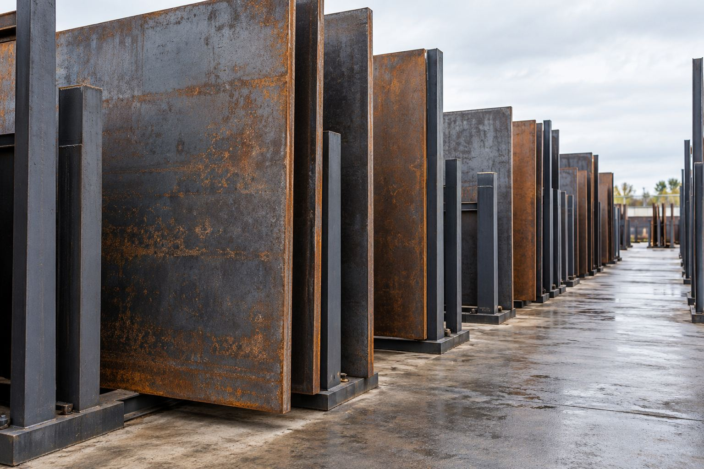

Structural plate
Structural plateEN 10025-5
S355J2W Plate
Weathering structural plate for projects that specify the S355J2W designation and its associated requirements.
Explore material ↗SHANDONG DAZHI supplies weathering steel plate and sheet for architecture, landscape and structural fabrication, with grade-led inquiries for international buyers.

Start with the grade, then define the product form and finish. Every inquiry is reviewed against your required specification.

Grade-led plate inquiries for fabricated structures and engineering projects.
Explore the collection ↗Sheet and panel materials for façades, exterior details and architectural fabrication.
Explore the collection ↗
Define the cut profile, finish and visual sample around an approved base grade.
Explore the collection ↗Weathering steel is specified for its material properties, not simply its appearance. Under suitable wet and dry exposure, a protective oxide layer develops over time.
Good design gives that surface the conditions it needs: drainage, ventilation and careful consideration of the surrounding environment.
Explore structural material, architectural sheet and drawing-based processing inquiries.
Structural plateWeathering structural plate for projects that specify the S355J2W designation and its associated requirements.
Explore material ↗ Structural plate
Structural plateA high-strength, low-alloy structural plate inquiry option with atmospheric corrosion resistance.
Explore material ↗Processed materialA surface-finish inquiry for projects that want to review an initial weathered appearance before installation.
Explore material ↗Discover the material questions behind façades, gardens, public spaces and engineered structures. These photographs illustrate applications, not DAZHI project references.
For buyers, fabricators and project teams, a clear material list is the starting point. Share your drawings, dimensions and finish expectations so the quotation can address the details that matter.
About our approachGrade, standard, condition and required documents.
Sizes, quantities, drawings and finish samples.
Exposure, delivery requirements and quotation scope.
Practical guides for selecting, ordering and working with weathering steel.

A clearer A588 inquiry starts with the complete grade, then connects plate dimensions, test records and fabrication requirements.
Read the guide ↗
SMA490BW and SPA-H belong to different JIS material families. Define the component and its acceptance requirements before discussing a substitute.
Read the guide ↗Review moisture, chlorides, drainage and the surrounding materials.
Read the guide ↗Start with these common questions, then share your project requirements.
All questions ↗No. In suitable exposure, a protective patina develops and slows further corrosion. The environment, detailing and inspection remain important throughout service.
COR-TEN is a trademark. Use the actual grade and standard in your order. A generic weathering-steel inquiry does not establish licensed COR-TEN origin.
Use an agreed physical sample for initial appearance. Natural weathering varies with exposure, orientation and time; an exact permanent color should not be assumed.
Marine salts, deicing salts and persistent dampness need a project-specific assessment. Provide the site location and exposure details before material selection.
Send the grade, size and quantity. Let’s define the next step.